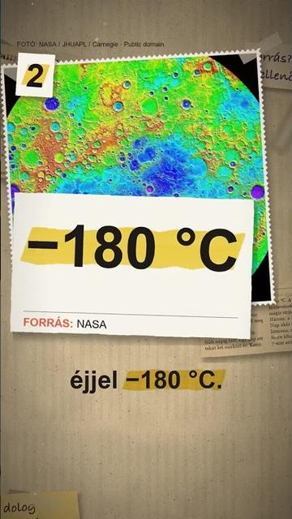

Megnézem a YouTube-on3 dolog, amit nem tudtál a Merkúrról
Röviden: A Merkúr a Naprendszer legkisebb és a Naphoz legközelebbi bolygója: 88 földi nap alatt kerüli meg a Napot, de egy teljes nappal-éjszaka nála 176 földi napig tart, vagyis két merkúri évig.
A Merkúr a Naprendszer legkisebb és a Naphoz legközelebbi bolygója: 88 földi nap alatt kerüli meg a Napot, de egy teljes nappal-éjszaka nála 176 földi napig tart, vagyis két merkúri évig. A tengelye körül 59 földi nap alatt fordul meg, de a különös keringése miatt a Nap csak 176 nap alatt tér vissza ugyanoda az égen. Nappal akár 430 °C, éjjel −180 °C is lehet, mert nincs a hőt megtartó légköre, csak igen ritka exoszférája; a sarkok mély krátereinek örök árnyékában mégis vízjég lehet. A Merkúr felszínéről a Nap napközelben több mint háromszor akkorának látszana, mint a Földről, és a fénye átlagosan csaknem hétszer erősebb lenne. Források: NASA Science, ESA, NASA NSSDC (lent).
Az összes rész forrásokkal: https://valoban.pages.dev/
Források
3 forrás · Hogyan ellenőrzünk?
Hibát találtál? Írd meg nekünk, megnézzük.
Képek és kreditek
• A Merkúr a MESSENGER-szonda mozaikján (NASA/JHUAPL/Carnegie) – NASA / JHUAPL / Carnegie Institution of Washington, Public domain (https://creativecommons.org/publicdomain/mark/1.0/) https://commons.wikimedia.org/?curid=23843231
• A Merkúr átvonul a Nap előtt, 2016. május 9. (NASA SDO, összetett kép) – NASA Goddard / SDO / Genna Duberstein, Public domain (https://creativecommons.org/publicdomain/mark/1.0/) https://commons.wikimedia.org/?curid=48768942
• A Merkúr és a Föld méretaránya (NASA-képekből összeállítva) – NASA / APL; összeállítás: Jcpag2012, Public domain (https://creativecommons.org/publicdomain/mark/1.0/) https://commons.wikimedia.org/?curid=38975641
• A Merkúr északi féltekéjének domborzata (NASA MESSENGER, 2015) – NASA / JHUAPL / Carnegie, Public domain (https://creativecommons.org/publicdomain/mark/1.0/) https://commons.wikimedia.org/?curid=39686347
• Vízjégre utaló foltok a Merkúr sarkán (MESSENGER és Arecibo, 2012) – NASA / JHUAPL / Carnegie / NAIC Arecibo Observatory (CC BY 2.0), Public domain (https://creativecommons.org/publicdomain/mark/1.0/) https://commons.wikimedia.org/?curid=51484551
• A Merkúr hamisszínes képe: a színek a kőzetek kémiai és ásványi különbségeit emelik ki (NASA MESSENGER) – NASA / JHUAPL / Carnegie, Public domain (https://creativecommons.org/publicdomain/mark/1.0/) https://commons.wikimedia.org/?curid=69020291
A képek módosítva: 9:16-ra kivágva, átméretezve, kameramozgással, ráégetett felirattal.